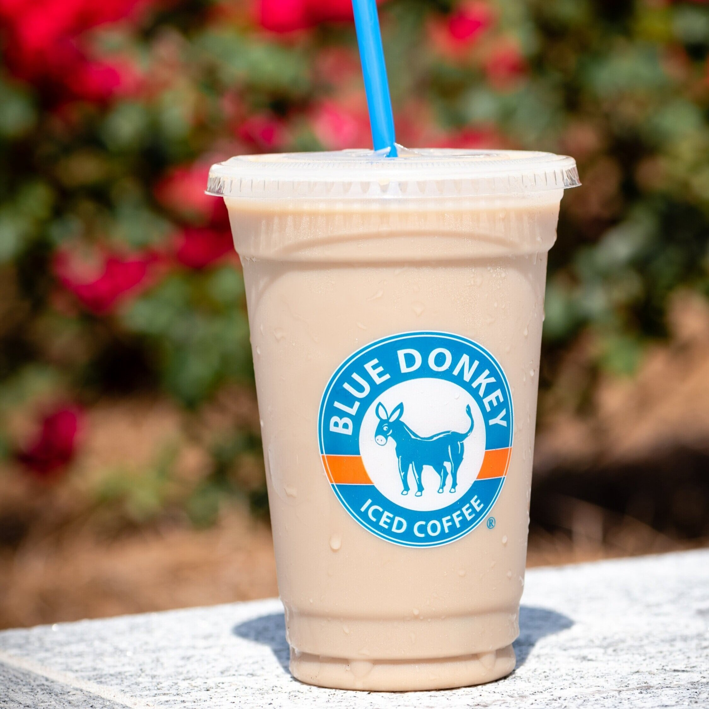

Reviews
Blue Donkey
As a coffee hater, I adore Blue Donkey. They don't serve anything but coffee, but their Light iced coffee is the love of my life. Honestly, it should barely be called coffee, it's more like milk with suppressed aspirations to be coffee. I love it. 10/10.
Kaldi's Coffee
Kaldi's. At this point, it's my own fault for being disappointed. Every single item I have ever purchased from that overpriced cafe on the first floor of CULC has disappointed me in ways I didn't know were possible. The lavender latte was abhorrent, the ube latte felt like a hate crime against the entirety of Southeast Asia, the matcha latte was glorified green sugar milk, and the tea tasted like bile. The food was equally disappointing. 0/10.